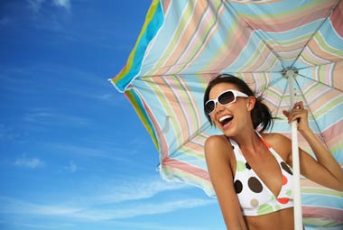

Секој индивидуално има сопствена визија за идеален одмор. Ако сте личност која сака да се излежува на плажа со коктел во рака логично е дека нема да се вратите среќни од планинарењето на кое ве наговорил вашиот партнер. Можеби на некои патувања и одмори сте заминале не размислувајќи премногу.

Според зборовите на Артур Хофман, еден од водечките луѓе на интернет порталот за патувања Expedia, изборот на одморот, било да се работи за летување или зимување, не се сведува само на тоа понудата да звучи интересно. Потребно е да се земе во предвид дали барате одмор или забава, место каде на кратко ќе се одморите од се или комплетно спокојство. Потоа, дали одите сами или со партнерот. Или со пријателите. Размислете за тоа дали сакате шопинг, посетување знаменитости, барате авантура или сакате да пробате некој екстремен спорт. И не заборавајте на вашиот карактер. Можеби оваа поделба на типови ќе ви помогне во изборот на вашата следна дестинација за одмор.
Тивок тип
Обично сте резервирани, преферирате да одите на одмор со помала група луѓе - можеби само со вашите најдобри пријатели, или партнерот. Не ви е проблем сами да отидете во музеј, времето да го поминете читајќи книга на осамена плажа. Во суштина, сакате активности кои го стимулираат вашиот интелект и ви помагаат да ви се наполнат батериите. Места за вас се: Фиренца, Малдиви, Керала (Индија).
Отворен тип
Пријателски сте настроени, сакате излегувања навечер и дестинации каде врие со живот. Друштвени сте и лесно склопувате нови пријателства. Сакате акција и авантура, интересни и необични ресторани, клупска сцена. Во основа, ви одговараат сите активности кои ги стимулираат сетилата. Места за вас се: Дубаи, Тајланд, Хаваи, Гоа, Белград, грчкиот остров Закинтос.
Експериментален тип
Имате бујна фантазија, интелектуално сте љубопитни, отворени кон нови и различни искуства. Вашиот идеален одмор е во метропола која ви допушта да се изгубите, да посетите авангардни изложби, или пак да одите на искачување по карпи во истиот аранжман. Сакате да пробате нови јадења и да откривате нови култури. Места за вас: Шпанија, Италија, САД, Лондон, Индија.
Конзервативен тип
Љубител сте на традиционалното. Новото не ве интересира. Сакате да посетувате места и да правите нешта кои се општествено прифатливи и одобрени од страна на семејството и блиските пријатели - посета на Париз заради Ајфеловата кула, на пример. Места за вас се: Англија, Блискиот Исток, Египет, Грција.